先完成 Library、Technology File、Cell。
依序畫 PO1、DIFF、CONT、PIMP/NIMP、NWELL。
用 ME1 接 VDD/GND/Vout，Pin 文字選 M1-TXT。
依序跑 DRC、LVS、PEX，再做 post-sim。
Page 1Lab9 作業規格：NAND / NOR 版圖目標點我展開/收合
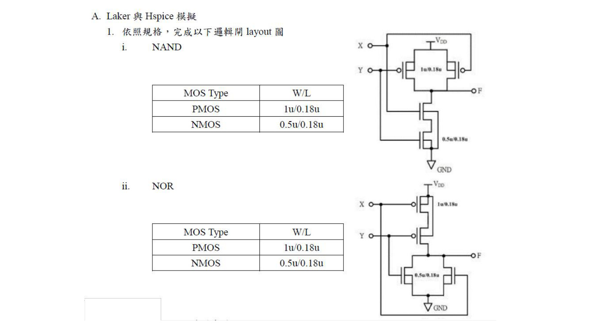
圖片對應說明
此頁先確認 Lab9 不是只畫 inverter，而是要依規格完成 NAND 與 NOR layout。PMOS 採 1u/0.18u，NMOS 採 0.5u/0.18u；後續 inverter 示範可當作基本元件建立方法，再套用到 NAND/NOR。
逐字稿對應段落
本頁主要來自投影片圖片，逐字稿沒有完全對應句，但已依上下文補上說明。
Page 2建立 Library 與 Cell點我展開/收合
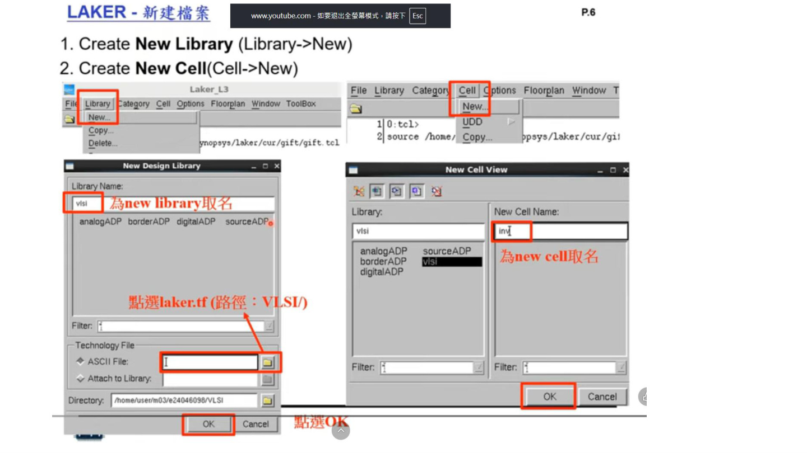
圖片對應說明
對應逐字稿一開始：先在 Laker 建立新的 library，再建立新的 cell。Technology file 必須指定課程提供的製程檔，cell 名稱要與之後 netlist/top cell 對應。
逐字稿對應段落
那接下來呢我們就會實際示範一次 layout 的整個流程給各位同學看。
好。好，那首先呢我們要創一個就是新的 library，那我們就是按 Library New，然後這邊呢我們就是取隨便取一個名字，那我這邊取 VLSI。那這裡呢，同學們在這個 technology file 這邊呢記得要加入這個我們的製程檔，那製程檔我們已經有給同學了。那它會在、這個 VLSI 2271 的這個桌面的這個地方，那同學可以把它加進來，然後按 OK。
然後完成我們 library 的創立之後呢，我們就要建一個新的 cell。那這次呢，我們這邊 library 是要點就是我們剛創創好的這個 VLSI。那這次我們要畫 inverter，所以我們名字就取名叫 inverter。
完成之後。怎麼了？哦好，不好意思。
有嗎？這樣有廣播嗎？好好好，那我剛沒有開到廣播，所以我再重做一次。那大家首先就是大家第一步打開 laker 之後呢，就是先創一個新的 library。那這邊就是按 library new，然後這邊呢 library name 你們就打隨便自己取一個名字。然後這邊 technology file 的部分呢，就是請同學們要到 VLSI 2271 的桌面去選這個 laker_gpdk.tf 的這個檔案。好，那完成 library 的創立之後呢，我們就是建一個新的 cell。那建一個 cell 呢，記得 library 要選我們剛創好的那一個 VLSI 的那個 library。然後 cell 呢就是就是隨便取。
Page 3選擇 technology file 與 cell view點我展開/收合
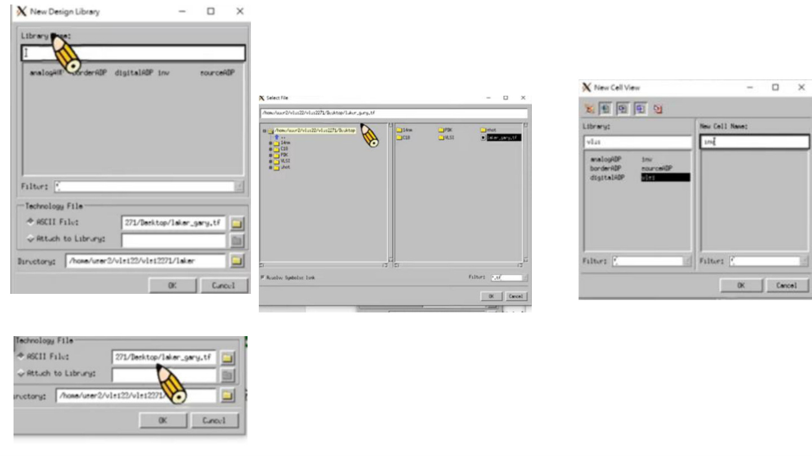
圖片對應說明
此頁補強 Page 2 的操作畫面：選擇 laker_gpdk.tf / laker_gary.tf 類型的 technology file，確認 library 建立後再新增 cell。
逐字稿對應段落
好。好，那首先呢我們要創一個就是新的 library，那我們就是按 Library New，然後這邊呢我們就是取隨便取一個名字，那我這邊取 VLSI。那這裡呢，同學們在這個 technology file 這邊呢記得要加入這個我們的製程檔，那製程檔我們已經有給同學了。那它會在、這個 VLSI 2271 的這個桌面的這個地方，那同學可以把它加進來，然後按 OK。
然後完成我們 library 的創立之後呢，我們就要建一個新的 cell。那這次呢，我們這邊 library 是要點就是我們剛創創好的這個 VLSI。那這次我們要畫 inverter，所以我們名字就取名叫 inverter。
完成之後。怎麼了？哦好，不好意思。
有嗎？這樣有廣播嗎？好好好，那我剛沒有開到廣播，所以我再重做一次。那大家首先就是大家第一步打開 laker 之後呢，就是先創一個新的 library。那這邊就是按 library new，然後這邊呢 library name 你們就打隨便自己取一個名字。然後這邊 technology file 的部分呢，就是請同學們要到 VLSI 2271 的桌面去選這個 laker_gpdk.tf 的這個檔案。好，那完成 library 的創立之後呢，我們就是建一個新的 cell。那建一個 cell 呢，記得 library 要選我們剛創好的那一個 VLSI 的那個 library。然後 cell 呢就是就是隨便取。
Page 4畫 PMOS：Poly Gate、DIFF、Contact、Design Rule 尺寸點我展開/收合
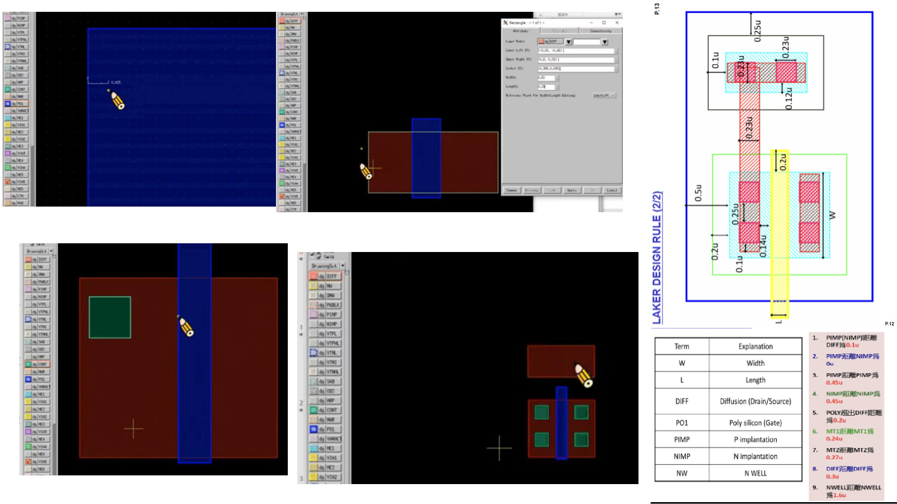
圖片對應說明
開始實作 PMOS。先用 PO1/DGPO1 畫 gate，channel length 設為 0.18；再用 DIFF 畫 source/drain，PMOS W 設為 1u；contact 固定 0.23u × 0.23u，poly 與 contact 間距需依 design rule 調整。
逐字稿對應段落
好。那我們接下來就開始畫我們的 layout。
那因為這次我們是要畫一個 inverter，那我們就先從 PMOS 開始。那 PMOS 的部分呢，我們先畫 gate，那畫 gate 呢因為它使用的是 poly，所以我們要先點這個 DGPO1 這個東西。然後點完之後呢，我們按鍵盤上面的 R，然後點左鍵就可以創造出一個矩形出來。那我們就先創出來之後，因為我們的 channel length L 都是 0.18，所以呢我們也要把這邊的 L 改成 0.18。那改 0.18 的方式呢有兩種，第一種是我們可以先按住右鍵把它放大。然後按鍵盤上面的 K 我們就可以拉出一個尺規。那這個尺規呢我們就可以量、我們可以量 0.18。哦、好，那量 0.18 之後呢我們就點這個邊把它收進去，這個就是 0.18 了。
那如果同學要把這個尺規消除呢，就是按 Shift 加 K 就可以把這個尺規消除。
那第二種方式呢，就是我們直接點這一個 poly，讓它反白之後我們按 Q。那按 Q 之後呢，它就會顯示出這個 width 跟這個 length。那要注意這個 width 它跟 length 它不是我們實際上 MOS 的這個 width 跟 length。它的 width 是這個寬，就是我們這個縱向的這個橫向的這個寬。然後 length 是這個。
好，那這邊呢我們就把 width 改成 0.18。然後它就會變成 0.18 了。那接下來呢我們就是要畫 drain 跟 source。那 drain 跟 source 呢是用 diffusion，那我們就點這個 DIFF。那同樣地按 R 可以創造出一個矩形。然後因為我們的 width 呢，我們是 PMOS 嘛，PMOS 它的 width 我們是使用 1 micron，所以這邊呢我們就是透過剛的方式把它改成 1 micron。那這邊要記得剛講的就是因為我們的 width 其實是縱向的、這個寬度，所以這邊我們要改的是 length 不是改上面這個 width。
好，那完成這兩個之後呢，接下來我們就可以把我們的 contact 打上去。那 contact 的部分一樣就是按這個 CONT 然後按 R 就可以創造出一顆 contact。那因為 contact 它的規格是固定的，都是 0.23 乘 0.23。所以我們就把它調成 0.23。那接下來呢我們要把這個 contact 擺進去。那要擺進去呢就會用到我們的這個 design rule。那這邊有提到就是我們的 poly 跟 contact 的距離必須要是 0.14 micron。所以呢我們就把這個 contact 擺進來。那這邊呢同樣有兩個擺法，一種就是我們放大之後按 K 去量 0.14。然後把它擺進來。那可以按 D 確認一下距離是不是 0.14。
那第二種方式呢，就是我們可以先點這個 contact 讓它反白，確認周圍有這個白框之後，我們按 A 然後再按 F3。然後把這個 spacing 打開之後調成 0.14。然後我們點這個邊跟這個邊，它就會把它變成 0.14 了。那這邊我們就要確認一下。
好，那同樣地就是因為 PMOS 它會有、它可以塞這個兩顆 contact 進來嘛，所以我們這邊就按 C 複製一下這顆 contact。那把它複製下來。然後這邊兩顆 contact 的距離是 0.25 micron。所以呢這邊我們一樣是透過 A 的方式把它改成 0.25。然後這樣子這邊就已經完成了。
那另一邊也要的話，我們就是框起來之後按 C 複製過來。然後呢這邊距離也是一樣就是 0.14。好，那這樣子就完成了。那接下來呢第二個部分是我們這個 contact 它跟 diffusion 的這個邊界是 0.12。所以呢我們一樣是按我們一樣是按 A 然後 F3 按 0.12。然後點這個邊跟這個邊，它就會把它收進來。那在做這個步驟的時候呢，同學記得不要點整個 diffusion。如果你點了整個 diffusion 然後再按 A 的話呢，它是會直接做移位的這個動作的。所以我們要直接點這個邊跟這個邊，它就會做形變。那我們就確認一下。好，那這樣子就 OK 了。
Page 5完成 PMOS implant/body/well 的包覆點我展開/收合
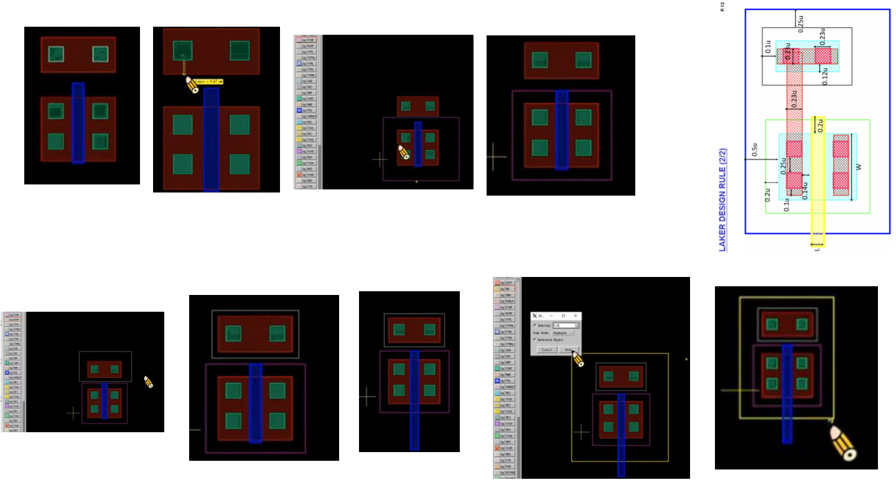
圖片對應說明
這一頁對應 PMOS body、PIMP、NIMP、N-well 的包覆。PIMP 與 diffusion、body NIMP 與 diffusion、N-well 與 diffusion/body implant 都要用 spacing 或 ruler 檢查。
逐字稿對應段落
那接下來呢，是要做，就是我們的 PMOS 的 body。那 PMOS 的 body 呢，一樣我們是先從 diffusion 開始，那我們就是先畫一顆這個 diffusion 出來。
先畫哪一個其實沒有差。對，不會有這個問題。
把它，把它對齊。
然後 contact 的部分我們就是框起來按 C 從下面把它複製上去就可以了。
然後稍微確認一下說我們這個有沒有符合 Design Rule。0.17 是 OK 的。
然後這個也 OK。好。好。好，那...
最後呢就是要圍出我們的這個 PIMP。因為我們是這個 NMOS，那我們是 PMOS 嘛。所以我們在我們的這個 diffusion 外層呢要記得要圍一層 PIMP 出來。
那這個 PIMP 呢，這邊有提到就是 PIMP 跟 diffusion 的距離要是 0.2。所以呢，這邊一樣就是按 A，然後 spacing 把它調成 0.2，然後就可以把它全部收進來。
好，然後最後是這個 body 的 NIMP。那 body 的 NIMP 也是一樣就是先畫一個矩形。
然後這邊 body 的 NIMP 跟它的 diffusion 要距離 0.1。所以呢我們就把 A 的參數調成 0.1。好，那...
這樣子到這邊為止呢，我們的 PMOS 已經幾乎完成了。那還差一個步驟。
就是我們的 N-well 要把它圍上去。那 N-well 呢，N-well 跟 diffusion 的距離必須是 0.5。然後跟 body 的這一個 NIMP 要是 0.25。所以呢我們先調 0.25，然後把這一個貼過來。然後再調 0.5。好，那這樣子我們的 PMOS 就已經完成了。
那接下來就是要畫 NMOS 的部分。那 NMOS 的部分呢我們其實可以直接直接複製下來，然後按這個按鈕就可以把它做一個旋轉。
那完成這之後呢，我們先改這個 NMOS 的這個 diffusion 的這個部分。那這個因為我們就把它改成 NIMP。
Page 6複製 PMOS 建立 NMOS，修改 W 與 implant點我展開/收合
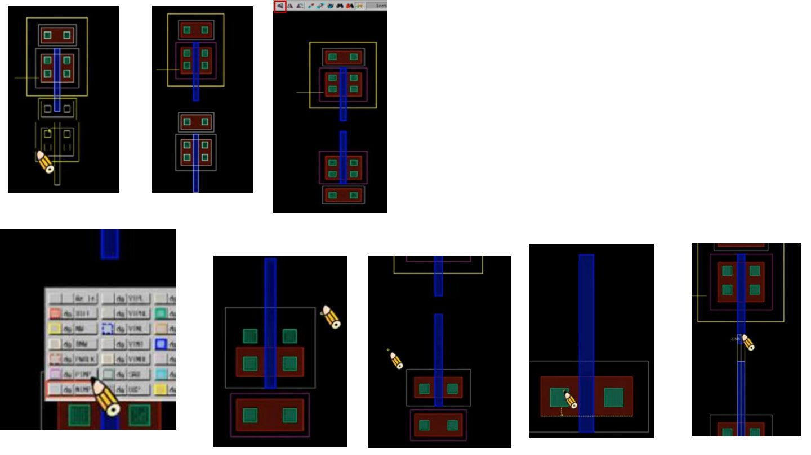
圖片對應說明
示範中用複製與旋轉快速建立 NMOS，但必須把 diffusion 對應的 implant 改成 NMOS 所需層，並把 W 從 PMOS 的 1u 改成 NMOS 的 0.5u。
逐字稿對應段落
那完成這之後呢，我們先改這個 NMOS 的這個 diffusion 的這個部分。那這個因為我們就把它改成 NIMP。
然後這邊銷售這也是把它改成 PIMP。然後這邊同學可能會忘記的就是...
我們複製下來之後，因為我們的 NMOS 呢它的 W 跟 PMOS 是不一樣的，所以這邊同學記得要改。就是要把它改成 0.5。
那這個上面這個 contact 我們就可以把它拿掉。然後這邊 0.2 也是把它貼進來。
那確認一下說我們這個 contact 有沒有符合 Design Rule。那像這邊就是已經小於 0.12 了。那這邊我們就可以稍微把它往上移一下。
然後點完之後記得要再確認一下說它的旁邊有沒有全部跑掉。那這樣子我們這個 PMOS 也算是，NMOS 也算是已經完成了。那接下來就是要實際接觸一顆 inverter 的這個樣子。
那接成 inverter 呢，首先就是我們要把 gate 端接在一起。所以我們就是把這個延伸拉在一起就好了。
然後再來就是把我們的 metal 打上去。那 metal 的部分呢就是按這個 DG ME1。那這個 ME1 呢同樣就是按 R 去 create 一個矩形出來。然後就把這個邊貼齊就好。
然後這邊 metal 這邊要凸出我們的 contact 0.1。所以這邊記得就是要把我們的 A 調成 0.1，然後把它貼進來。好，那這邊這個這裡就完成了。
Page 7接線：Gate 相接、Drain/Source 用 Metal1 連接點我展開/收合
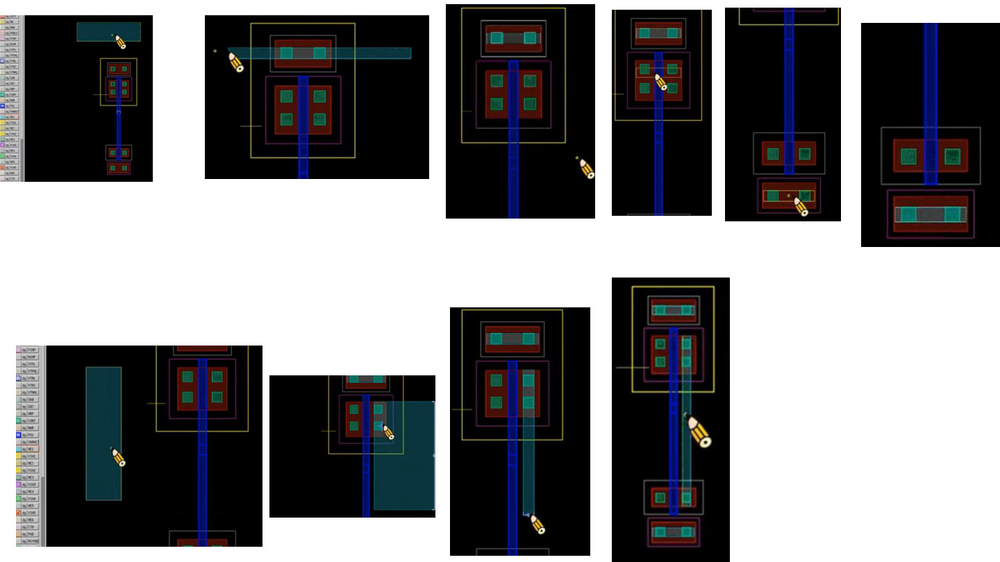
圖片對應說明
完成單顆 inverter 結構後，開始把 gate 端相接，並用 ME1/Metal1 連接 source/drain。Metal 覆蓋 contact 時要有足夠凸出量，避免 DRC 錯誤。
逐字稿對應段落
那同樣的我們就是複製一條下來到 NMOS 這邊。
然後再來的話呢我們就是要把 drain 跟 source 它們接在一起嘛。所以呢我們一樣就是再畫一個 metal。
然後確認每一邊它都有是超凸出去 0.1。這邊這樣子我們的就已經接好了。
那再來最後一個步驟呢，就是要把我們的 PMOS 的 source 端接到 VDD，然後 NMOS 的 source 端要接到 GND。所以這邊呢一樣是透過 metal 把我們的這個東西接上去。好，那這邊就已經接好了。那接下來一樣就是直接複製一條下來就好了。
Page 8VDD/GND 與輸出端完整拉線點我展開/收合
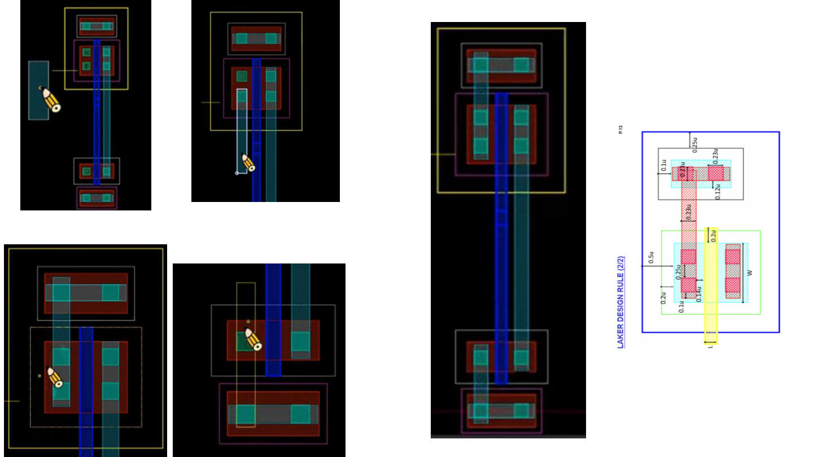
圖片對應說明
這頁是 wiring 收斂：PMOS source 接 VDD，NMOS source 接 GND，中間 drain 合併成 Vout。對 NAND/NOR 也要套用同樣概念，只是串並聯位置不同。
逐字稿對應段落
本頁主要來自投影片圖片，逐字稿沒有完全對應句，但已依上下文補上說明。
Page 9建立 Pin：VDD、GND、Vin、Vout點我展開/收合
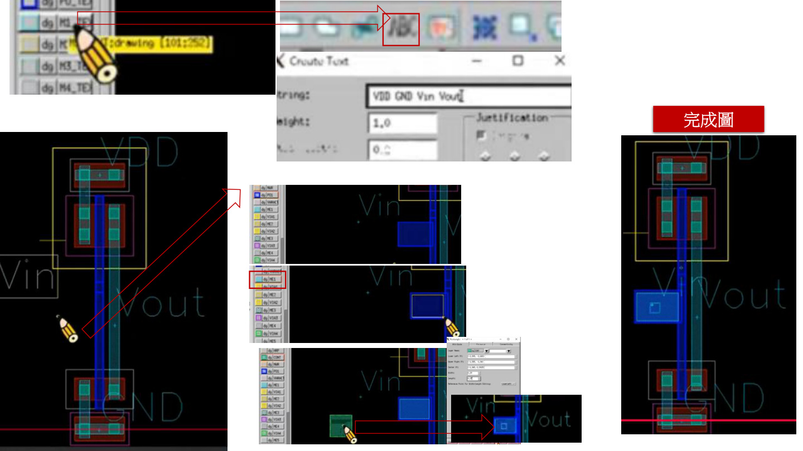
圖片對應說明
打 pin 時必須選 M1-TXT，不要選成 Metal1。Vin 若在 poly 上，建議透過 contact 拉到 metal，再放文字 pin，避免後續串接電路時 poly 走線不方便。
逐字稿對應段落
好，那這樣子呢，基本上我們的這個 inverter 就已經是幾乎快完成。
那接下來我們就是要把每一個 pin 腳都打上去。
那打 pin 腳呢，同學記得要選這個 M1-TXT 這個東西，那不要選成 metal 1。選成 metal 1 它就會認不出這個東西。
然後呢，我們就可以按這個 ABC，或者是按 L。然後把我們要的腳位選上去。
VDD、GND、Vin、Vout。
那全部都打上去之後呢，按 hide，那我們就可以把所有的腳位都貼上去。
那這邊 Vin 呢，同學可以看我這個貼在邊邊。
那主要的話呢，是因為我們的 Vin 是要打在這個 poly 上面的嘛。那要打在 poly 上面呢，我們就必須要透過一個 contact 把它從底下拉上來去接到我們這個 Vin。
那這個呢，我們一樣就是先用 poly 1 的這個部分先把它做一個延伸。
然後上面記得要再打一層這個 metal。
然後呢，就是最後就是把我們的 contact 放上去。
好，接下來整個 inverter 完成之後，我們就可以確認一下我們的 DRC 跟 LVS 還有 PX 的流程。
那 DRC 呢，我們就是按這個 verify，然後 Calibre，Run DRC。
Page 10Run DRC：選 rule.drc 並執行點我展開/收合
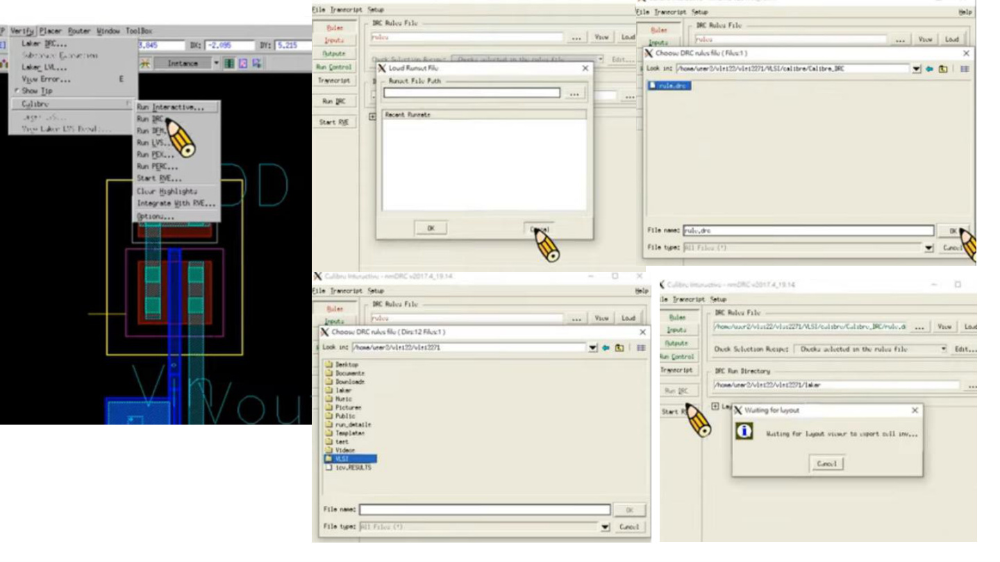
圖片對應說明
完成 layout 後進入 Verify → Calibre → Run DRC。選擇 CIC018/VLSI 資料夾中的 DRC rule，執行後依錯誤列表逐一修正。
逐字稿對應段落
好，那打開我們的 DRC 之後呢，同學就要在這個 rule 這邊選我們的 CIC018 的這個 DRC 的 rule。
那這個 rule 在我們的 VLSI 這個資料夾裡面。然後選完之後呢，就可以按 Run DRC。
好，那出來之後呢，如果有錯同學就可以按照上面的這個指示來做 debug。
那一樣就是點這個兩下之後呢，它就會在我們的 layout 上面秀出我們錯的部分是哪裡。
那它現在跟我說就是我這個，這個地方是沒有 0.12 的。
那我們就確認一下說這裡是有多長好了。
好，那這邊是已經小於 0.12 了。
那我們就是把它調成 0.12。
好，那調完之後再確認一下。好，那這樣是 0.12，那我們就可以再跑一次 DRC。
那如果你們的 DRC 跑出來是顯示這個空白的這個頁面，那代表你們的 DRC 已經沒有問題了。那我們就可以開始來做 LVS 的部分。
Page 11DRC Debug 與完成結果點我展開/收合
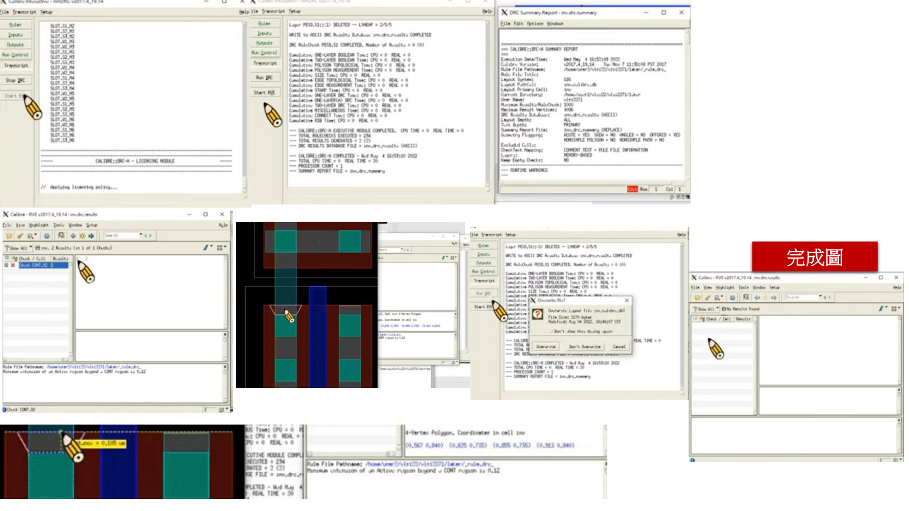
圖片對應說明
若 DRC 出現錯誤，雙擊錯誤項目會 highlight layout 上違反規則的位置；示範中把不足 0.12u 的間距修正後重跑。空白結果頁代表 DRC 沒有錯。
逐字稿對應段落
那我們就確認一下說這裡是有多長好了。
好，那這邊是已經小於 0.12 了。
那我們就是把它調成 0.12。
好，那調完之後再確認一下。好，那這樣是 0.12，那我們就可以再跑一次 DRC。
那如果你們的 DRC 跑出來是顯示這個空白的這個頁面，那代表你們的 DRC 已經沒有問題了。那我們就可以開始來做 LVS 的部分。
那 LVS 一樣就是按這個 verify，Calibre，然後 Run LVS。然後它一開始會跳出這個頁面呢，我們可以先直接把它按叉叉關掉。
那在 rule 這邊呢，就是要選 LVS 的 rule。那這個同樣是在 VLSI 這個資料夾裡面。
然後再來第二個部分是 input 的部分。那 input 呢，同學記得要點這個 netlist，然後選你們上次 Lab 8 完成的那一個 circuit.spi。
然後在 top cell 的部分要改呈你們對應的那一個電路，然後就可以直接按 Run LVS 了。
好，那朋友們 LVS 跑完之後，如果出來的頁面是這個綠色的笑臉，還有這個打勾跟笑臉的這個頁面呢，那基本上就是沒有問題了。
那如果同學的 LVS 有錯的話呢，這邊有一個 debug 的方式，就是你們可以往下到這邊去看一下。
Page 12Run LVS：選 LVS rule 與 circuit.spi點我展開/收合
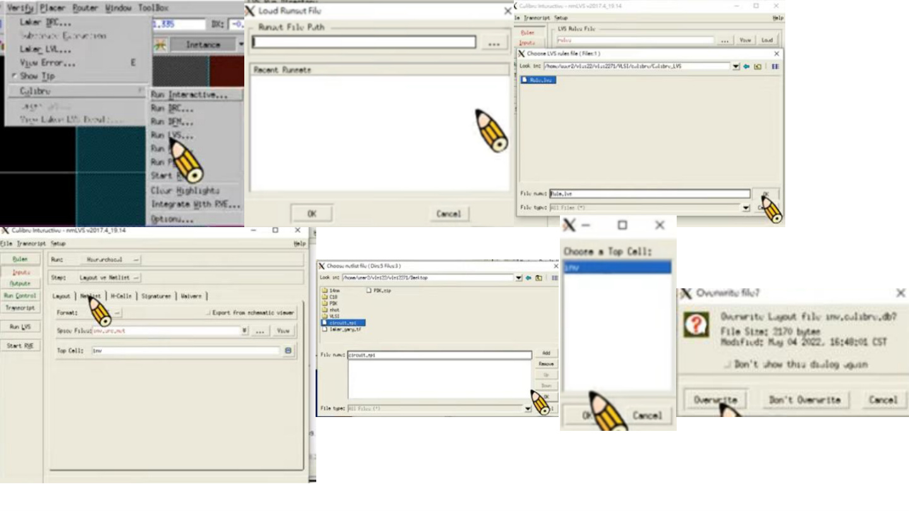
圖片對應說明
DRC 通過後做 LVS。選 LVS rule，Input 選 netlist，匯入 Lab8 產生或沿用的 circuit.spi，top cell 要改成目前電路名稱，再執行 Run LVS。
逐字稿對應段落
右邊這個 source 呢，就是你們吃進來的那個 SPI 檔。那左邊這個就是我們剛剛畫好的 layout。那我們就可以從這邊看出我們的這個 port，就是我們的腳位。那看腳位的數量有沒有不一樣。它可能是因為我們短路了，或者是斷路了。那再來就是看 net 的部分有沒有不一樣。那我們就可以透過這些方式來看出我們的 layout 上面是有什麼問題。
那 LVS 跑完之後，最後一個步驟就是 PX，我們要萃出我們的一些寄生的參數。那這邊一樣就是按 Calibre，然後 Run PX。
Page 13LVS 成功與 Debug 重點點我展開/收合
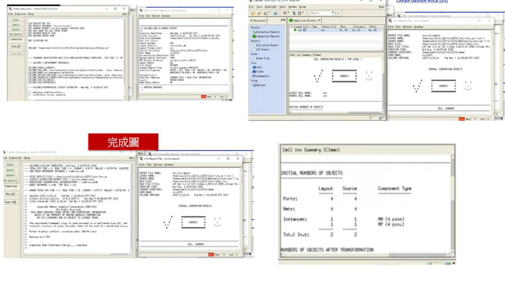
圖片對應說明
LVS 出現綠色笑臉、打勾表示 layout 與 schematic/netlist 比對成功。若失敗，先看 port 數量、net 名稱、短路或斷路問題。
逐字稿對應段落
本頁主要來自投影片圖片，逐字稿沒有完全對應句，但已依上下文補上說明。
Page 14Run PEX 與 Post-sim 所需檔案點我展開/收合
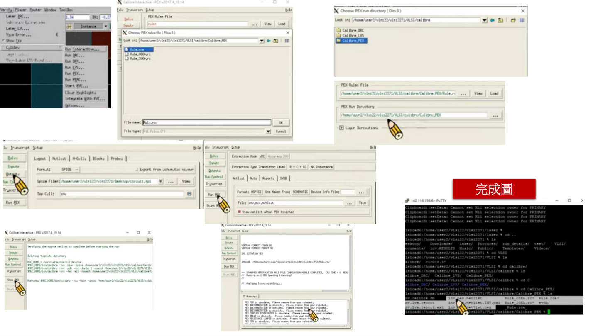
圖片對應說明
最後做 PEX。Rule 選 rule.rcx，PEX run directory 要選 rule 資料夾上一層；Output 的 transistor level 選 R+C+CC，netlist format 選 HSpice。PEX 會產生 post-sim 要引入的多個寄生參數檔。
逐字稿對應段落
那一樣就是出來的這個頁面呢，我們可以直接打叉把它關掉。
然後 Rule 這邊呢，就是選 PEX 的這個 Rule。那這個也是在 VLSI 的資料夾裡面。
那我們是選這個 rule.rcx。
然後這邊呢，要做一個跟前面比較不一樣的動作，就是這個 PEX run directory 的這裡呢，我們是需要去進行修改的。
那我們修改的路徑呢，會是我們 Rule 的資料夾的上一層。就是我們的 Rule 是在這個資料夾裡面，所以我們就選這個資料夾就好，不要點進去，點進去就會錯。所以我們就是點這一個資料夾。
那確認一下，就是我們的路徑是有改對的。
那再來就是 Input 的部分。那 Input 呢，一樣，我們這邊要選 netlist，然後把我們剛剛的那個 circuit.spi 一起丟進來。
然後最後是 Output 的部分。Output 的部分，這個 transistor level 後面這裡記得要選 R+C+CC。
然後 netlist 這裡的 format 要改成 HSpice。
那這樣子就沒有問題了，就可以開始跑 PEX。
好，那我們的 PEX 跑完之後呢，它會生出三個檔案。
那這三個檔案就會在我們剛剛已經選的那一個 PEX 的那個路徑裡面。
好，那同學可以看到，就是 inv.lvs.pex.這幾個檔案呢，是我們到時候要跑 Posim 的時候要把它拉進去的這三個檔案。
那接下來就是跑 Posim 的流程，那同學就是照著投影片做就 OK 了。
Layout_Lab9_part01.txt 完整逐字稿
[00:00 - 00:19] 說話者 A: 那接下來呢我們就會實際示範一次 layout 的整個流程給各位同學看。 [00:19 - 01:01] 說話者 A: 好。好，那首先呢我們要創一個就是新的 library，那我們就是按 Library New，然後這邊呢我們就是取隨便取一個名字，那我這邊取 VLSI。那這裡呢，同學們在這個 technology file 這邊呢記得要加入這個我們的製程檔，那製程檔我們已經有給同學了。那它會在、這個 VLSI 2271 的這個桌面的這個地方，那同學可以把它加進來，然後按 OK。 [01:01 - 01:41] 說話者 A: 然後完成我們 library 的創立之後呢，我們就要建一個新的 cell。那這次呢，我們這邊 library 是要點就是我們剛創創好的這個 VLSI。那這次我們要畫 inverter，所以我們名字就取名叫 inverter。 [01:41 - 02:21] 說話者 A: 完成之後。怎麼了？哦好，不好意思。 [02:21 - 03:50] 說話者 A: 有嗎？這樣有廣播嗎？好好好，那我剛沒有開到廣播，所以我再重做一次。那大家首先就是大家第一步打開 laker 之後呢，就是先創一個新的 library。那這邊就是按 library new，然後這邊呢 library name 你們就打隨便自己取一個名字。然後這邊 technology file 的部分呢，就是請同學們要到 VLSI 2271 的桌面去選這個 laker_gpdk.tf 的這個檔案。好，那完成 library 的創立之後呢，我們就是建一個新的 cell。那建一個 cell 呢，記得 library 要選我們剛創好的那一個 VLSI 的那個 library。然後 cell 呢就是就是隨便取。 [03:50 - 04:07] 說話者 A: 好。那我們接下來就開始畫我們的 layout。 [04:07 - 05:54] 說話者 A: 那因為這次我們是要畫一個 inverter，那我們就先從 PMOS 開始。那 PMOS 的部分呢，我們先畫 gate，那畫 gate 呢因為它使用的是 poly，所以我們要先點這個 DGPO1 這個東西。然後點完之後呢，我們按鍵盤上面的 R，然後點左鍵就可以創造出一個矩形出來。那我們就先創出來之後，因為我們的 channel length L 都是 0.18，所以呢我們也要把這邊的 L 改成 0.18。那改 0.18 的方式呢有兩種，第一種是我們可以先按住右鍵把它放大。然後按鍵盤上面的 K 我們就可以拉出一個尺規。那這個尺規呢我們就可以量、我們可以量 0.18。哦、好，那量 0.18 之後呢我們就點這個邊把它收進去，這個就是 0.18 了。 [05:54 - 06:42] 說話者 A: 那如果同學要把這個尺規消除呢，就是按 Shift 加 K 就可以把這個尺規消除。 [06:42 - 07:22] 說話者 A: 那第二種方式呢，就是我們直接點這一個 poly，讓它反白之後我們按 Q。那按 Q 之後呢，它就會顯示出這個 width 跟這個 length。那要注意這個 width 它跟 length 它不是我們實際上 MOS 的這個 width 跟 length。它的 width 是這個寬，就是我們這個縱向的這個橫向的這個寬。然後 length 是這個。 [07:22 - 08:49] 說話者 A: 好，那這邊呢我們就把 width 改成 0.18。然後它就會變成 0.18 了。那接下來呢我們就是要畫 drain 跟 source。那 drain 跟 source 呢是用 diffusion，那我們就點這個 DIFF。那同樣地按 R 可以創造出一個矩形。然後因為我們的 width 呢，我們是 PMOS 嘛，PMOS 它的 width 我們是使用 1 micron，所以這邊呢我們就是透過剛的方式把它改成 1 micron。那這邊要記得剛講的就是因為我們的 width 其實是縱向的、這個寬度，所以這邊我們要改的是 length 不是改上面這個 width。 [08:49 - 10:28] 說話者 A: 好，那完成這兩個之後呢，接下來我們就可以把我們的 contact 打上去。那 contact 的部分一樣就是按這個 CONT 然後按 R 就可以創造出一顆 contact。那因為 contact 它的規格是固定的，都是 0.23 乘 0.23。所以我們就把它調成 0.23。那接下來呢我們要把這個 contact 擺進去。那要擺進去呢就會用到我們的這個 design rule。那這邊有提到就是我們的 poly 跟 contact 的距離必須要是 0.14 micron。所以呢我們就把這個 contact 擺進來。那這邊呢同樣有兩個擺法，一種就是我們放大之後按 K 去量 0.14。然後把它擺進來。那可以按 D 確認一下距離是不是 0.14。 [10:28 - 11:41] 說話者 A: 那第二種方式呢，就是我們可以先點這個 contact 讓它反白，確認周圍有這個白框之後，我們按 A 然後再按 F3。然後把這個 spacing 打開之後調成 0.14。然後我們點這個邊跟這個邊，它就會把它變成 0.14 了。那這邊我們就要確認一下。 [11:41 - 12:39] 說話者 A: 好，那同樣地就是因為 PMOS 它會有、它可以塞這個兩顆 contact 進來嘛，所以我們這邊就按 C 複製一下這顆 contact。那把它複製下來。然後這邊兩顆 contact 的距離是 0.25 micron。所以呢這邊我們一樣是透過 A 的方式把它改成 0.25。然後這樣子這邊就已經完成了。 [12:39 - 14:15] 說話者 A: 那另一邊也要的話，我們就是框起來之後按 C 複製過來。然後呢這邊距離也是一樣就是 0.14。好，那這樣子就完成了。那接下來呢第二個部分是我們這個 contact 它跟 diffusion 的這個邊界是 0.12。所以呢我們一樣是按我們一樣是按 A 然後 F3 按 0.12。然後點這個邊跟這個邊，它就會把它收進來。那在做這個步驟的時候呢，同學記得不要點整個 diffusion。如果你點了整個 diffusion 然後再按 A 的話呢，它是會直接做移位的這個動作的。所以我們要直接點這個邊跟這個邊，它就會做形變。那我們就確認一下。好，那這樣子就 OK 了。
Layout_Lab9_part02.txt 完整逐字稿
[00:00 - 00:19] 說話者 A: 那接下來呢，是要做，就是我們的 PMOS 的 body。那 PMOS 的 body 呢，一樣我們是先從 diffusion 開始，那我們就是先畫一顆這個 diffusion 出來。 [00:19 - 00:26] 說話者 A: 先畫哪一個其實沒有差。對，不會有這個問題。 [00:30 - 00:39] 說話者 A: 把它，把它對齊。 [00:44 - 00:53] 說話者 A: 然後 contact 的部分我們就是框起來按 C 從下面把它複製上去就可以了。 [00:53 - 01:00] 說話者 A: 然後稍微確認一下說我們這個有沒有符合 Design Rule。0.17 是 OK 的。 [01:00 - 01:10] 說話者 A: 然後這個也 OK。好。好。好，那... [01:11 - 01:26] 說話者 A: 最後呢就是要圍出我們的這個 PIMP。因為我們是這個 NMOS，那我們是 PMOS 嘛。所以我們在我們的這個 diffusion 外層呢要記得要圍一層 PIMP 出來。 [01:26 - 01:44] 說話者 A: 那這個 PIMP 呢，這邊有提到就是 PIMP 跟 diffusion 的距離要是 0.2。所以呢，這邊一樣就是按 A，然後 spacing 把它調成 0.2，然後就可以把它全部收進來。 [02:04 - 02:09] 說話者 A: 好，然後最後是這個 body 的 NIMP。那 body 的 NIMP 也是一樣就是先畫一個矩形。 [02:09 - 02:30] 說話者 A: 然後這邊 body 的 NIMP 跟它的 diffusion 要距離 0.1。所以呢我們就把 A 的參數調成 0.1。好，那... [02:31 - 02:41] 說話者 A: 這樣子到這邊為止呢，我們的 PMOS 已經幾乎完成了。那還差一個步驟。 [02:42 - 03:16] 說話者 A: 就是我們的 N-well 要把它圍上去。那 N-well 呢，N-well 跟 diffusion 的距離必須是 0.5。然後跟 body 的這一個 NIMP 要是 0.25。所以呢我們先調 0.25，然後把這一個貼過來。然後再調 0.5。好，那這樣子我們的 PMOS 就已經完成了。 [03:19 - 03:36] 說話者 A: 那接下來就是要畫 NMOS 的部分。那 NMOS 的部分呢我們其實可以直接直接複製下來，然後按這個按鈕就可以把它做一個旋轉。 [03:36 - 03:50] 說話者 A: 那完成這之後呢，我們先改這個 NMOS 的這個 diffusion 的這個部分。那這個因為我們就把它改成 NIMP。 [03:50 - 03:59] 說話者 A: 然後這邊銷售這也是把它改成 PIMP。然後這邊同學可能會忘記的就是... [04:00 - 04:10] 說話者 A: 我們複製下來之後，因為我們的 NMOS 呢它的 W 跟 PMOS 是不一樣的，所以這邊同學記得要改。就是要把它改成 0.5。 [04:10 - 04:24] 說話者 A: 那這個上面這個 contact 我們就可以把它拿掉。然後這邊 0.2 也是把它貼進來。 [04:24 - 04:35] 說話者 A: 那確認一下說我們這個 contact 有沒有符合 Design Rule。那像這邊就是已經小於 0.12 了。那這邊我們就可以稍微把它往上移一下。 [04:54 - 05:11] 說話者 A: 然後點完之後記得要再確認一下說它的旁邊有沒有全部跑掉。那這樣子我們這個 PMOS 也算是，NMOS 也算是已經完成了。那接下來就是要實際接觸一顆 inverter 的這個樣子。 [05:11 - 05:22] 說話者 A: 那接成 inverter 呢，首先就是我們要把 gate 端接在一起。所以我們就是把這個延伸拉在一起就好了。 [05:22 - 05:55] 說話者 A: 然後再來就是把我們的 metal 打上去。那 metal 的部分呢就是按這個 DG ME1。那這個 ME1 呢同樣就是按 R 去 create 一個矩形出來。然後就把這個邊貼齊就好。 [05:56 - 06:18] 說話者 A: 然後這邊 metal 這邊要凸出我們的 contact 0.1。所以這邊記得就是要把我們的 A 調成 0.1，然後把它貼進來。好，那這邊這個這裡就完成了。 [06:18 - 06:28] 說話者 A: 那同樣的我們就是複製一條下來到 NMOS 這邊。 [06:28 - 06:48] 說話者 A: 然後再來的話呢我們就是要把 drain 跟 source 它們接在一起嘛。所以呢我們一樣就是再畫一個 metal。 [07:17 - 07:26] 說話者 A: 然後確認每一邊它都有是超凸出去 0.1。這邊這樣子我們的就已經接好了。 [07:26 - 08:55] 說話者 A: 那再來最後一個步驟呢，就是要把我們的 PMOS 的 source 端接到 VDD，然後 NMOS 的 source 端要接到 GND。所以這邊呢一樣是透過 metal 把我們的這個東西接上去。好，那這邊就已經接好了。那接下來一樣就是直接複製一條下來就好了。
Layout_Lab9_part03.txt 完整逐字稿
[00:00 - 00:09] 說話者 A: 好，那這樣子呢，基本上我們的這個 inverter 就已經是幾乎快完成。 [00:09 - 00:13] 說話者 A: 那接下來我們就是要把每一個 pin 腳都打上去。 [00:13 - 00:26] 說話者 A: 那打 pin 腳呢，同學記得要選這個 M1-TXT 這個東西，那不要選成 metal 1。選成 metal 1 它就會認不出這個東西。 [00:26 - 00:35] 說話者 A: 然後呢，我們就可以按這個 ABC，或者是按 L。然後把我們要的腳位選上去。 [00:35 - 00:44] 說話者 A: VDD、GND、Vin、Vout。 [00:44 - 00:58] 說話者 A: 那全部都打上去之後呢，按 hide，那我們就可以把所有的腳位都貼上去。 [00:58 - 01:03] 說話者 A: 那這邊 Vin 呢，同學可以看我這個貼在邊邊。 [01:03 - 01:15] 說話者 A: 那主要的話呢，是因為我們的 Vin 是要打在這個 poly 上面的嘛。那要打在 poly 上面呢，我們就必須要透過一個 contact 把它從底下拉上來去接到我們這個 Vin。 [01:15 - 01:23] 說話者 A: 那這個呢，我們一樣就是先用 poly 1 的這個部分先把它做一個延伸。 [01:23 - 01:35] 說話者 A: 然後上面記得要再打一層這個 metal。 [01:35 - 01:40] 說話者 A: 然後呢，就是最後就是把我們的 contact 放上去。 [01:40 - 02:04] 說話者 A: 好，接下來整個 inverter 完成之後，我們就可以確認一下我們的 DRC 跟 LVS 還有 PX 的流程。 [02:04 - 02:12] 說話者 A: 那 DRC 呢，我們就是按這個 verify，然後 Calibre，Run DRC。 [02:12 - 04:10] 說話者 A: 好，那打開我們的 DRC 之後呢，同學就要在這個 rule 這邊選我們的 CIC018 的這個 DRC 的 rule。 [04:10 - 05:07] 說話者 A: 那這個 rule 在我們的 VLSI 這個資料夾裡面。然後選完之後呢，就可以按 Run DRC。 [05:07 - 06:45] 說話者 A: 好，那出來之後呢，如果有錯同學就可以按照上面的這個指示來做 debug。 [06:45 - 06:59] 說話者 A: 那一樣就是點這個兩下之後呢，它就會在我們的 layout 上面秀出我們錯的部分是哪裡。 [06:59 - 07:06] 說話者 A: 那它現在跟我說就是我這個，這個地方是沒有 0.12 的。 [07:06 - 07:11] 說話者 A: 那我們就確認一下說這裡是有多長好了。 [07:11 - 07:18] 說話者 A: 好，那這邊是已經小於 0.12 了。 [07:18 - 07:24] 說話者 A: 那我們就是把它調成 0.12。 [07:24 - 08:21] 說話者 A: 好，那調完之後再確認一下。好，那這樣是 0.12，那我們就可以再跑一次 DRC。 [08:21 - 09:07] 說話者 A: 那如果你們的 DRC 跑出來是顯示這個空白的這個頁面，那代表你們的 DRC 已經沒有問題了。那我們就可以開始來做 LVS 的部分。 [09:07 - 10:01] 說話者 A: 那 LVS 一樣就是按這個 verify，Calibre，然後 Run LVS。然後它一開始會跳出這個頁面呢，我們可以先直接把它按叉叉關掉。 [10:01 - 10:38] 說話者 A: 那在 rule 這邊呢，就是要選 LVS 的 rule。那這個同樣是在 VLSI 這個資料夾裡面。 [10:38 - 10:58] 說話者 A: 然後再來第二個部分是 input 的部分。那 input 呢，同學記得要點這個 netlist，然後選你們上次 Lab 8 完成的那一個 circuit.spi。 [10:58 - 11:44] 說話者 A: 然後在 top cell 的部分要改呈你們對應的那一個電路，然後就可以直接按 Run LVS 了。 [11:44 - 13:20] 說話者 A: 好，那朋友們 LVS 跑完之後，如果出來的頁面是這個綠色的笑臉，還有這個打勾跟笑臉的這個頁面呢，那基本上就是沒有問題了。 [13:20 - 13:35] 說話者 A: 那如果同學的 LVS 有錯的話呢，這邊有一個 debug 的方式，就是你們可以往下到這邊去看一下。 [13:35 - 13:55] 說話者 A: 右邊這個 source 呢，就是你們吃進來的那個 SPI 檔。那左邊這個就是我們剛剛畫好的 layout。那我們就可以從這邊看出我們的這個 port，就是我們的腳位。那看腳位的數量有沒有不一樣。它可能是因為我們短路了，或者是斷路了。那再來就是看 net 的部分有沒有不一樣。那我們就可以透過這些方式來看出我們的 layout 上面是有什麼問題。 [13:55 - 14:15] 說話者 A: 那 LVS 跑完之後，最後一個步驟就是 PX，我們要萃出我們的一些寄生的參數。那這邊一樣就是按 Calibre，然後 Run PX。
Layout_Lab9_part04.txt 完整逐字稿
[00:00 - 00:06] 說話者 A: 那一樣就是出來的這個頁面呢，我們可以直接打叉把它關掉。 [00:16 - 00:27] 說話者 A: 然後 Rule 這邊呢，就是選 PEX 的這個 Rule。那這個也是在 VLSI 的資料夾裡面。 [00:27 - 00:32] 說話者 A: 那我們是選這個 rule.rcx。 [00:32 - 00:41] 說話者 A: 然後這邊呢，要做一個跟前面比較不一樣的動作，就是這個 PEX run directory 的這裡呢，我們是需要去進行修改的。 [00:41 - 00:58] 說話者 A: 那我們修改的路徑呢，會是我們 Rule 的資料夾的上一層。就是我們的 Rule 是在這個資料夾裡面，所以我們就選這個資料夾就好，不要點進去，點進去就會錯。所以我們就是點這一個資料夾。 [00:01 - 00:01] 說話者 A: 那確認一下，就是我們的路徑是有改對的。 [00:01 - 00:01] 說話者 A: 那再來就是 Input 的部分。那 Input 呢，一樣，我們這邊要選 netlist，然後把我們剛剛的那個 circuit.spi 一起丟進來。 [00:01 - 00:01] 說話者 A: 然後最後是 Output 的部分。Output 的部分，這個 transistor level 後面這裡記得要選 R+C+CC。 [00:01 - 00:01] 說話者 A: 然後 netlist 這裡的 format 要改成 HSpice。 [00:01 - 00:01] 說話者 A: 那這樣子就沒有問題了，就可以開始跑 PEX。 [00:02 - 00:02] 說話者 A: 好，那我們的 PEX 跑完之後呢，它會生出三個檔案。 [00:02 - 00:02] 說話者 A: 那這三個檔案就會在我們剛剛已經選的那一個 PEX 的那個路徑裡面。 [00:03 - 00:03] 說話者 A: 好，那同學可以看到，就是 inv.lvs.pex.這幾個檔案呢，是我們到時候要跑 Posim 的時候要把它拉進去的這三個檔案。 [00:03 - 00:03] 說話者 A: 那接下來就是跑 Posim 的流程，那同學就是照著投影片做就 OK 了。 [00:03 - 00:04] 說話者 A: 那今天的助教課就講到這邊，那同學還有什麼問題嗎？那如果目前還沒有問題的話呢，那我們就先這樣。 [00:04 - 00:04] 說話者 A: 啊如果不會用 A 的同學呢，你們就用 K 就好了。這樣，懂嗎？ [00:04 - 00:04] 說話者 B: 助教，這一定要接出來嗎？還是直接用 Poly1 text 就不用再接出來變成 Metal？ [00:04 - 00:05] 說話者 A: 那...那當然是可以，但是，因為會希望接出來是因為，就是只有 Inverter 會是你直接打 Poly 進去是可以的。因為你有些訊號你可能左右要接線，所以大家通常會習慣這打一個 Contact 在這上面。就是你如果只單做一個 Inverter，你直接打 Poly1 進去是沒有問題的。但你如果可能是某幾個電路要接在一起，就是可能 Inverter 要接在一起變 Buffer 的情況下，你輸入端不是要跟輸出端連結？所以你就不能直接用 Poly 去做接線。對對對，所以習慣還是會拉 Contact。 [00:05 - 00:05] 說話者 B: 所以助教的意思是說，以現在這個狀況是可以。然後問一下剛助教說那個 L，基本上就是最小規格，我如果這樣畫 NAND 跟 NOR 的時候，就是可以不要完全對得那麼齊？我是說是不是可以做大一點？ [00:05 - 00:05] 說話者 A: 是可以的，但是，因為我們上這個數位 Layout 的目的就是希望省最小面積。所以還是希望你以最小規格下去畫，因為做那些 Cell Library 的工程師在做 Cell Library 的時候都是以 Design Rule 的最小規格下去做的。 [00:05 - 00:06] 說話者 A: 所以反正就是，能做到最小當然是做到最小。就是可能你畫大一點，如果最後助教看到怎麼這麼大，其實沒有關係，你可以把它畫大一點。 [00:06 - 00:06] 說話者 B: 好，反正這個暫時沒關係。 [00:06 - 00:06] 說話者 A: 對對對，可能助教最後看一看會不會斟酌扣分。對。 [00:06 - 00:06] 說話者 B: 那個助教我有一個問題，那個 .pex 的檔，因為我們是把 SPI 檔跟其他的檔都寫在一起，就是三個寫在一起，那我們的波形接波形跟接波形是要三個都貼一樣的還是只貼一個？ [00:06 - 00:06] 說話者 A: 接波形的部分你可以在 WaveView 裡面開不一樣的結果出來就好。但是... [00:06 - 00:06] 說話者 B: 可是我們不可以接一張然後全部都連線嗎？ [00:06 - 00:06] 說話者 A: 盡量不要，就是把每一個結果讓助教可以一目了然看到答案是對的。對，你接那一張圖就是三個接同一個沒關係，但是波形的方式你就盡量... [00:06 - 00:06] 說話者 B: 那助教問一個問題，這個視窗大小怎樣隨便隨便亂移，怎麼把它放大或縮小？ [00:07 - 00:07] 說話者 A: 哦，就是...就這樣。滑鼠右鍵拉著就這樣。然後你如果，正常放大縮小是 Ctrl+Z 或者是 Shift+Z。 [00:07 - 00:07] 說話者 A: 那如果我要...把它右移、左移，就是角度...你說右移、左移？就是...左右鍵而已，左右鍵而已。